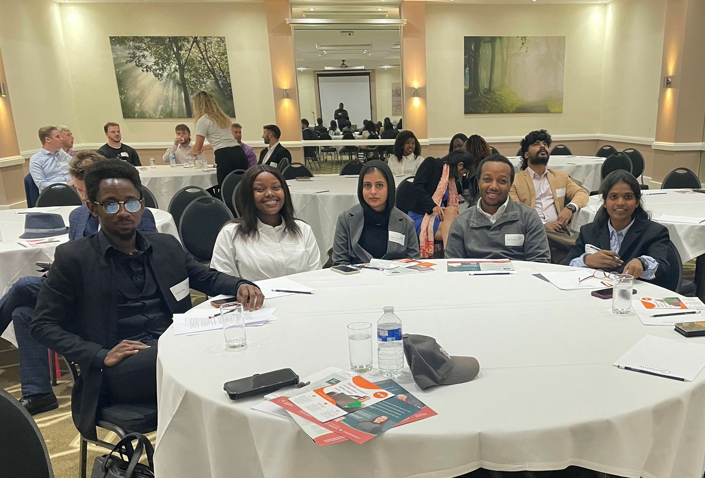
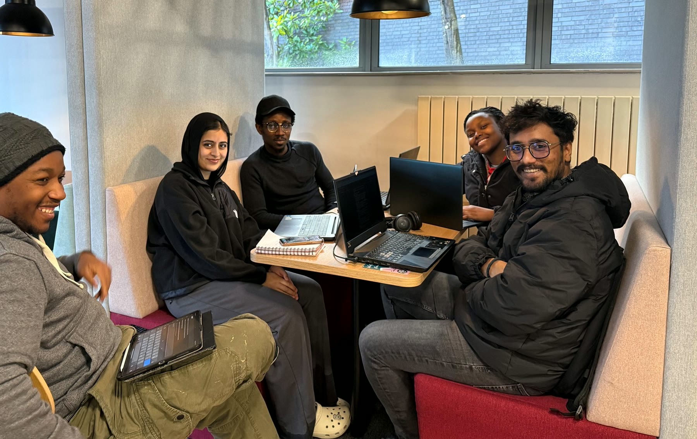

Potential. Profession. Lasting impact.
Building the Bridge Between Potential and Profession.
Northumbria Construct is a professional engagement platform founded to bridge skills and generational gaps while inspiring the next generation of construction and project professionals through meaningful local and international engagement.
Born from an award-winning project within the Association for Project Management Project Management Challenge, we connect students, graduates, universities, professional institutions and industry to create lasting opportunities for learning, leadership and innovation.

Who we are
Talent alone is not enough.
Across the construction and project professions, countless students and early-career professionals possess exceptional technical ability but often lack access to the networks, experiences, mentors and professional understanding that transform potential into successful careers.
Many are first-generation professionals.
Many are international students.
Many simply do not know where to begin.
Northumbria Construct was established to change that.
We create structured opportunities that connect academia with industry, experienced professionals with emerging talent, and today’s leaders with tomorrow’s innovators.
Through professional engagement, mentoring, research, volunteering, industry collaboration and international partnerships, we help people understand not only what they can become—but how to get there.
Our story
It began as a project.
Northumbria Construct did not begin as a society. It began with a practical question about student engagement.
2025
In 2025, a multidisciplinary student team participated in the Association for Project Management Project Management Challenge through a project called Bridge the Gap.
Understand why many talented students struggle to engage meaningfully with the construction industry—and develop practical solutions that create lasting change.
Rather than ending when the competition finished, the project evolved. The evidence showed that students required an ongoing platform capable of sustaining engagement long after graduation.
That platform became Northumbria Construct.
Today, we continue the legacy of Bridge the Gap by transforming temporary project outcomes into sustainable community impact.
The project involved
- Industry interviews
- Research across academia and practice
- Professional body engagement
- Storytelling
- Outreach events
- Cross-border collaboration
Our guiding principleWhen projects succeed, communities benefit.

Why we exist
More than a skills shortage.
The construction industry faces an engagement challenge.
Students often graduate without understanding professional institutions, chartership pathways, networking, volunteering, leadership, industry expectations or career planning.
At the same time, experienced professionals possess decades of knowledge that often remain inaccessible to younger generations.
The generational gap.
By connecting people, ideas and opportunities, we create an environment where knowledge is transferred, confidence is built and future leaders emerge.
What we do
We transform engagement into opportunity.
Our work gives emerging professionals practical ways to learn, lead, connect and contribute.
Professional Engagement
Connecting students with leading professional institutions including APM, CIOB, ICE and industry partners.
Industry Events
Seminars, conferences, debates, workshops and networking opportunities.
Site Visits
Providing practical exposure to major infrastructure and construction projects.
Research
Conducting research that addresses real industry challenges while informing future initiatives.
Innovation
Developing practical tools and frameworks capable of improving project delivery and industry practice.
Leadership Development
Providing opportunities for students to lead projects, organise events and develop professional confidence.
International Collaboration
Connecting students and professionals across countries to encourage global learning and shared experiences.
Our impact
Young platform.
Measurable impact.
Most importantly, Northumbria Construct has shown that student-led initiatives can deliver lasting value beyond the university environment.
01
Engaged hundreds of students
02
Collaborated with leading professional institutions
03
Organised international seminars
04
Delivered Oxford-style debates
05
Facilitated industry site visits
06
Increased participation in professional activities
07
Established partnerships across the United Kingdom and Nigeria
08
Inspired new generations of project professionals
Latest news
Recognition at Northumbria University.
A proud milestone for the people and purpose behind Northumbria Construct.
Northumbria Construct founder recognised as an Outstanding Student.
Northumbria Construct founder Kufre Antia was recognised as an Outstanding Student by the Vice-Chancellor of Northumbria University and invited to the University’s 2026 Annual Summer Congregation and Chancellor’s Farewell Dinner.
The recognition celebrates academic achievement, leadership and the wider impact of work to connect students, academia and the construction industry.
A milestone for purposeful student leadership and professional engagement.A leading global platform.
To become the leading global platform connecting academia, industry and emerging professionals through engagement, innovation and collaboration, creating a future where every aspiring project and construction professional has access to the opportunities, knowledge and networks needed to thrive.
Bridge. Inspire. Develop. Connect.
To bridge skills and generational gaps by inspiring, developing and connecting the next generation of professionals through meaningful local and international engagement, industry collaboration, innovation and lifelong learning.
Opportunity should be accessible.
We exist to ensure that no aspiring professional is disadvantaged by a lack of access to information, opportunity or professional networks. By connecting education and practice, we enable individuals, organisations and communities to grow together.
Our values
The principles behind the platform.
Purpose
Everything we do should create meaningful impact.
Service
Leadership begins by helping others succeed.
Collaboration
The greatest challenges are solved together.
Professionalism
Integrity, accountability and excellence underpin every activity.
Innovation
We continuously seek better ways of improving industry practice.
Inclusion
Talent exists everywhere. Opportunity should too.
Sustainability
Projects should create benefits that continue long after delivery.
Our tagline
Together, we can Build the Bridge to Bridge the Gap.
Join a growing community committed to learning, leadership, innovation and lasting professional impact.
Connect with Northumbria Construct